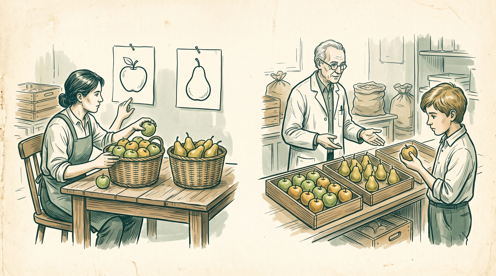
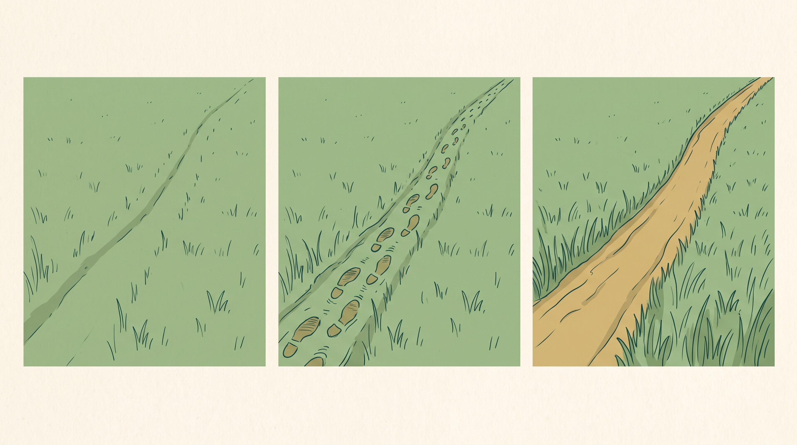
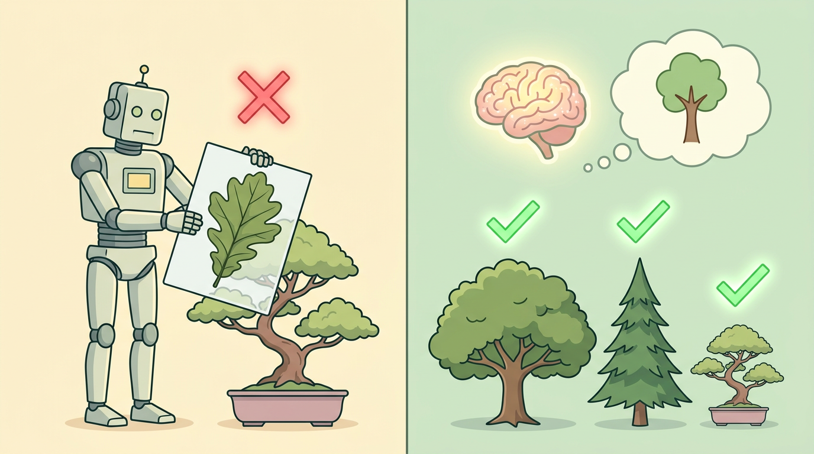

✉
„Gewinn abholen!“
→ SpamErkennen
Ein Klassifikationsmodell ordnet eine E-Mail ein.
WOCHE 02
Lernen, Handeln und Nutzen verstehen
Prof. Dr. Mathias Engel
Wissen → selbst ausprobieren → gemeinsam auswerten
„Gewinn abholen!“
→ SpamEin Klassifikationsmodell ordnet eine E-Mail ein.
„Bitte um Termin“
→ AntwortentwurfEin Sprachmodell formuliert einen neuen Text.
Termin prüfen → Tool
→ KalendereintragEin Agent nutzt Werkzeuge, um einen Auftrag auszuführen.
Ein Antworttext ist noch keine Aktion. Erst ein Werkzeug verändert den Kalender.
Verhalten prüfen
Antrag / Workshop
Bildklassifikation
Neue Architektur
1950: Verhalten testen · 1956: Forschungsfeld gründen · 2012: Bilder erkennen · 2017: Attention nutzen.
Auswahl, nicht vollständig. Originalpublikationen: Turing S. 433; Dartmouth Einleitung; AlexNet und Transformer jeweils S. 1.
Ordnen Sie vier Karten: Turing · Dartmouth · AlexNet · Transformer.
„1955 fand der Dartmouth-Workshop statt.“
„Die Abstände der Symbolbilder beweisen exponentiellen Fortschritt.“
Notieren Sie je Aussage eine Korrektur und einen Grund.
1950 → 1955/56 → 2012 → 2017.
A: Antrag 1955, geplanter Workshop im Sommer 1956.
B: Die Symbolcollage hat keinen einheitlichen Zeitmaßstab. Daraus lässt sich keine Wachstumsrate berechnen.
Eine plausible Geschichte braucht belastbare Belege.

Programmieren: „Wenn die Frucht rot ist, lege sie nach links.“ Die Regel steht vorher fest.
Lernen: Markierte Beispiele zeigen, welche Früchte nach links gehören. Das Training passt die Modellparameter an.
Regeln werden vorgegeben. Modellparameter werden gelernt.
Technisches Schaubild: Eingaben → Gewichte → Vorhersage ↗ [R4]

Biologischer Ausgangspunkt: Nervenzellen geben Signale über Synapsen weiter.
Hebbs Idee: Trägt Zelle A wiederholt zur Aktivierung von B bei, kann ihre Verbindung wirksamer werden.
Pfadmetapher: Häufig gemeinsam benutzte Wege werden leichter begehbar.
Nervenzelle ↗ · Signalübertragung an der Synapse ↗ · Hebb (1949), S. 62

Training: An Beispielen die Parameter anpassen.
Test: Andere, bisher unbenutzte Beispiele prüfen.
Anwendung: Das trainierte Modell auf neue Eingaben anwenden.
Auswendig gelernte Klausuraufgaben reichen für neue Aufgaben nicht.
Bildmetapher für zwei Lernstrategien – Menschen und KI können sowohl memorieren als auch generalisieren.
| Farbe | Form | freigeben? |
|---|---|---|
| grün | rund | ✓ |
| grün | rund | ✓ |
| grün | rund | ✓ |
| gold | eckig | — |
| gold | eckig | — |
| gold | eckig | — |
Finden Sie eine Regel, die alle sechs Beispiele erklärt.
Finden Sie danach eine andere passende Regel.
Testfälle bleiben bis zur nächsten Folie verborgen.
| Unbekannter Fall | Regel: grün | Regel: rund |
|---|---|---|
| grün + eckig | ✓ | — |
| gold + rund | — | ✓ |
Trainingsleistung allein beweist keine Verallgemeinerung.
Systeme erzeugen z. B. Vorhersagen, Empfehlungen oder Entscheidungen.
Beispiel: Spam anhand markierter E-Mails erkennen.
Beispiel: einen passenden Antworttext formulieren.
„Agentisch“ beschreibt zusätzlich die Ablaufsteuerung – nicht eine weitere Schachtel.
„Finde einen freien Termin.“
Wählt die Kalenderabfrage.
Liefert freie Zeitfenster.
Modell prüft das Ergebnis.
Erst nach Freigabe: Termin über das Kalenderwerkzeug eintragen.
Ein Chattext schlägt einen Termin vor. Ein Werkzeugaufruf kann den Kalender verändern.
Wenn Betrag > 500 €, Freigabe anfordern.
Aus markierten E-Mails Spam erkennen.
Eine passende Antwort formulieren.
Immer: lesen → rechnen → Textentwurf → Freigabe.
Selbst nächste Recherche wählen, Ergebnis prüfen, bei Bedarf erneut suchen.
Antwort formulieren und anschließend per fester Regel archivieren.
Ordnen: Regel · gelernt · generativ · Workflow · Agent. Mehrfachnennungen begründen. Wo braucht es eine Freigabe?
| Fall | Einordnung |
|---|---|
| A / B | Explizite Regel / gelerntes Klassifikationsmodell |
| C / D | Generative Ausgabe / fest orchestrierter Workflow |
| E / F | Agentischer Suchablauf / generative Ausgabe in festem Workflow |
Ein System kann gleichzeitig gelernt, generativ und agentisch sein.
Freigaben richten sich nach möglichen Folgen – nicht nach dem Produktnamen.
Danach: weniger hinzufügen.
Mehr Wirkung verstehen.
Aufgabe: Lego-Konstruktion stabilisieren. Ergänzen kostete Geld; Entfernen war kostenlos.
Anteil subtraktiver Lösungen · Experiment 1, n = 197 · Nature 592, S. 259, Tabelle 1. Keine Bevölkerungsstatistik.
Recherche → Text → Prüfung
Zweiter Text-Agent → Abstimmung
Besserer Text oder nur mehr Arbeit?
Doppelte Zusammenfassung entfernen. Quellen- und Freigabeprüfung behalten.
Jeder zusätzliche Schritt muss einen konkreten Nutzen haben.
Formular ausfüllen → Angaben per E-Mail wiederholen → manuell übertragen → zweiten identischen Datensatz pflegen → Bestätigung schicken
Fügen Sie eine nützliche Hilfe hinzu.
Entfernen Sie unnötige Doppelarbeit.
Gleicher Maßstab: korrekte Anmeldung, verständliche Rückmeldung, nötige Kontrolle.
Additiv: Feldhilfe oder Vollständigkeitsprüfung verhindert Rückfragen.
Subtraktiv: Einmal erfassen, zentral speichern; E-Mail-Wiederholung und doppelte Liste entfallen.
Beibehalten: verständliche Bestätigung, notwendige Freigaben und kontrollierte Zugriffe.
Die beste Lösung darf beide Suchrichtungen verbinden.
Die Antwort ist sprachlich gut.
Aktuelle Unterlagen + Ticketzugriff + Freigabe.
Weniger Gesamtzeit bei gleicher Qualität.
Ohne aktuelle Lieferbedingungen formuliert das Modell möglicherweise eine falsche Zusage. Erst passende Informationen und Prüfung machen die Antwort nutzbar.
Ohne Assistenz · 100 × 6 Minuten
Mit Assistenz · 100 × (2 Minuten Entwurf + 2 Minuten Prüfung)
Zusätzlich 2 Minuten Nacharbeit je Fall
Messen Sie die gesamte Bearbeitungszeit, nicht nur die Texterzeugung.
Fiktives Rechenbeispiel; Einrichtungskosten nicht enthalten.
„Unsere KI spart dem Support viel Zeit.“
Was müsste man dafür prüfen?
Welche Fälle? Welche Zeit und Qualität heute?
Was muss besser werden – und was darf nicht schlechter werden?
Welche synthetischen Fälle? Wer prüft?
Bei welchem Fehler stoppen wir?
Erfolgskriterium und Abbruchregel gehören vor den Versuch.
01 Regeln, Lernen und Generieren unterscheiden.
02 Autonomie und Werkzeugwirkung begrenzen.
03 Nutzen mit einem guten Test prüfen.
Token, Kontext und Steuerung – die nächste Vertiefung.
Nachlesen: Kapitel 1 · Arbeitsblatt · Quellen · Folienfeedback
Von Kulturtechniken zu lernenden und generativen Systemen.
Hebb als Analogie; Modelle an neuen Fällen prüfen.
Agenten nutzen Tools; Werkstätten regeln Übergaben.
Subtraktive Lösungen bewusst suchen; unnötige Schritte streichen.
Amara einordnen; Zeitgewinn minus Nacharbeit + Qualität testen.
Definition & Lernen
OECD (2024), AI System Definition, S. 6–7.
LeCun, Bengio & Hinton (2015), Deep learning, S. 436–438.
Hebb (1949), The Organization of Behavior, S. 62.*
Geschichte
Turing (1950), Computing Machinery and Intelligence, S. 433.
McCarthy et al. (1955), Dartmouth Proposal, Einleitung.
Krizhevsky et al. (2012), ImageNet Classification, S. 1.
Vaswani et al. (2017), Attention Is All You Need, S. 1.
Lösungssuche & Wirkung
Adams et al. (2021), Nature 592, S. 258–261, insb. 259.
IFTF (2016), Caregiving 2031, S. 7.
Anthropic (2024, aktualisiert), Building effective agents.
Lehrkonzeption & Bilder
Kapitel 1, Modulplan und Trinity-Projektunterlagen.
Purves et al. (2001): Chemical Synapses (online).
KI Literacy Basics: Lehrschaubilder.
Eigene didaktische Aufgaben; Projektillustrationen und Kie.ai / Nano Banana 2.
* Hebb über geprüften Buchnachweis; erneuter Originalzugriff gesperrt. Vollständige Nachweise, Links und Bildprovenienz ↗